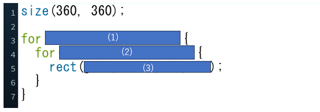
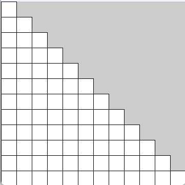

問題のコード
プログラム実行画面
問題文
上図は,orループの中にforループを埋め込んで,正方形を階段状に表示するプログラムです.
(1)int型の変数をiとして初期値は0,iが12未満の場合実行し,iが1ずつ増加するようにしてください.
(2)int型の変数をjとして初期値は0,jがi以下の場合実行し,jが1ずつ増加するようにしてください.
ただし(1),(2)ともi=i+1のような場合は、i++としなさい
(3)繰り返し実行されるコードとして,rect関数を１つだけ用いて,幅30高さ30の正方形を階段状に表示させるプログラムを埋めてください.
(3)実行結果から正方形の基準点がどう変化すると,階段状になるかを考えましょう.
解答欄
解説欄